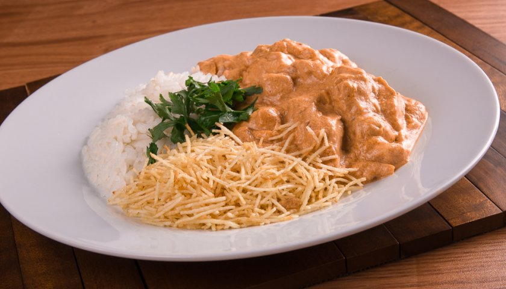

Recipe de Strogonoff


This is going to be my favorite recipe.
List of Ingredients
- 3 chicken breasts cut into cubes
- 1 minced garlic clove
- Salt and pepper to taste
- 1 chopped onion
- 2 tablespoons of mayonnaise
- 1 spoon of butter
- 1/2 cup of ketchup
- 1/3 cup mustard
- 1 cup of mushrooms
- 1 cup of sour cream
- straw potato to taste
Preparation Mode
- In a pan, mix the chicken, garlic, mayonnaise, salt and pepper.
- In a large skillet, melt the butter and brown the onion.
- Add the seasoned chicken until golden.
- Add the mushrooms, ketchup and mustard.
- Add the cream and remove from the heat before boiling.
- Serve with white rice and potatoes chips.
Additional Information
Stroganoff, despite being a very famous recipe among Brazilians, was born in Russia and was
a dish served to Russian nobility. In Brazil, it became popular in the 1970s and was a
especially served at parties. It didn't take long, the stroganoff arrived on everyone's plates.
Brazilians and today it is part of our daily lives.
Recipe de Pancakes
Pasta ingredients list
- 1 cup of wheat flours
- 1 glass of milk
- 1 tablespoon of corn starch
- 2 units of egg
- salt to taste
- 1 tablespoon of soy oil
- 1 tablespoon of grated cheese
Chicken stuffing ingredients list
- 300 g cooked and shredded chicken
1/2 piece of chopped onion
1 unit of minced garlic
1 pcs chopped skinless and seeded tomato
2 tablespoons of oil
1 tablespoon of parsley
Ground peppercorns , ground to taste
salt to taste
1/2 can of canned corn
1/2 can of peas
1/2 cup of cottage cheese
Pasta preparation method
- Mix everything in the blender and let it rest for about 15 minutes before starting to fry.
- Try to use a non-stick frying pan of 18 to 25 cm maximum and with low edges with a drizzle of olive oil, always on medium heat.
- Wipe off the excess oil with a paper towel and always pass this paper towel every two fried pancakes.
- Always let the skillet heat up for about 30 seconds before adding another amount of batter to fry.
- Add enough batter to make thin pancakes and always the same amount from beginning to end.
- When the dough has bubbles, use a slotted spoon to remove the whole pancake first and then turn it over.
- After all the pancakes are fried, just fill to taste: chicken, hearts of palm, ricotta or meat, put your favorite sauce on the pancakes and serve.
Filling preparation method
- Sauté the onion and garlic in olive oil and over low heat.
- When the onion is transparent, add the tomato and sauté for another five minutes.
- Add the chicken and corn and season with pepper and adjust salt if necessary.
- Add 1/4 cup of water, mix well and, after 3 minutes, turn off the heat.
- Mix the curd, parsley and peas and fill the pancakes.
Additional Information
During the process, use a non-stick skillet. This will guarantee the success of your pancake.
of ground beef, so that it doesn't stick or tear. Furthermore, between a shell of dough and
another, check if the bottom needs more oil. It also makes the pancake batter
slide more easily and look perfect.